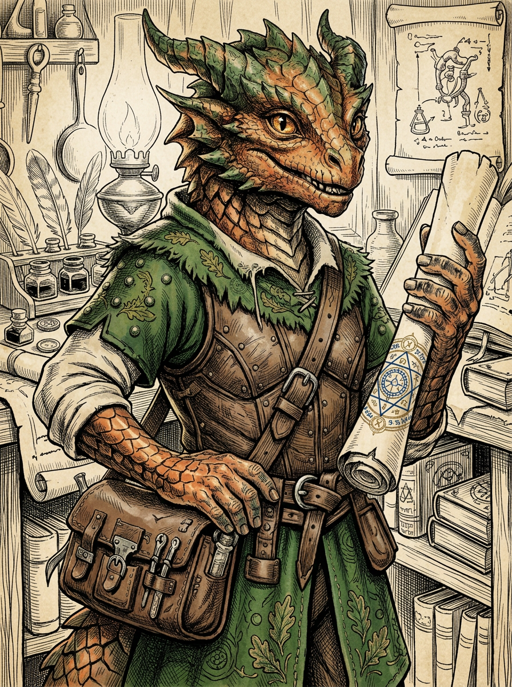

Scales the color of aged copper catch the light—a warm, ruddy shine that deepens to verdigris green at the edges of horns and jaw. Where a red dragonborn commands presence, Akogane suggests motion: smaller-framed, quicker in gesture, built for dexterity rather than pure strength. The horns are less a crown than an accent, swept back like he’s perpetually in a hurry.
The hands are the giveaway. Calligrapher’s hands: nimble, scarred from a thousand careful cuts of ink knives, perpetually stained with indigo and carmine. The fingernails are filed to precise edges. Ink lives under them, in them, possibly a permanent resident at this point.
The clothes are fine—the Scribe’s wardrobe of good linen and durable wool—but they show the road now. Dust in the seams. A tear in the hem carefully stitched, but stitched with function over aesthetics. The satchel is worn leather, organized with obsessive care: parchment separated by type, writing tools in their proper rolls, small objects wrapped in cloth and placed with intention. There is always something new at the bottom: a coin that glows softly if left in darkness, a scrap of vellum with something written on it that was important once.
Eyes are bright, alert, missing nothing. The expression is open—a natural friendliness that reads as genuine, not performed.
Where most adventurers burn bright or brood, Akogane radiates the kind of warmth that invites you to sit closer to the fire. It’s not an act. He was raised in a house full of books and maps, by a father who believed precision was love and a mother who believed curiosity was the greatest gift. Both were right, and their child inherited both faiths.
He is relentlessly funny—not in the loud way, but in the way that makes you realize mid-laugh that the joke was true. Humor is instinct: a way to hold space, to defuse tension, to say “I see you and this is going to be okay.” He learned it from his ancestors, the copper dragons—creatures who view the world as endless possibility and wonder, and who understand that a good joke is sometimes the bravest magic.
His laugh is genuine. So is his curiosity. He asks questions not to interrogate but to understand, the way a good cartographer examines the contours of unknown land. He listens with full attention. He remembers names and details and the small things people care about.
But there is a precision underneath the warmth. He was trained by a scribe to notice inconsistencies, to see where the ink pools differently, to spot the forged document amid a stack of legitimate ones. He knows, better than most, how easily written truth can become written lies. This knowledge sits in him now with a particular weight—because he knows someone who moved in that space between truth and falsehood, and he remembers believing in the wrong version.
Akogane grew up in a scriptorium: a place of careful work and careful people. His father, a scribe, spent his days producing documents that meant something—legal records, commissioned manuscripts, letters that shaped kingdoms. He taught Akogane that the shape of a letter mattered, that precision was a form of respect, that your hand was a record of your character. You couldn’t lie with your penmanship; it told the truth whether you wanted it to or not.
His mother was a cartographer. She drew maps of places real and rumored, and her work was better than her reputation—people trusted her maps because she didn’t fill the unknown spaces with speculation. She left them blank, with neat notation: Unconfirmed, Local Guide Required, Do Not Trust Other Versions. His mother understood that admitting what you don’t know is more valuable than filling the void with authority.
The child split the difference. Akogane became a scribe—his father’s discipline, his mother’s vision. He filled his margins with sketches, tiny drawings of what might live in the blank edges of his mother’s maps. It was a kind of dreaming in code. It was enough.
Until he met someone who noticed the margin sketches.
This person, a traveler, was clever in the way that makes intelligence feel like a gift rather than a weapon. They were funny. They paid attention. They asked about the drawings, and Akogane, who had spent his whole life being careful, found himself being reckless. He fell like falling is supposed to feel in stories: completely, helplessly, with the certainty of someone who has never been hurt before.
The first kiss was the kind that rearranges geography. The world was before and after.
Then, over months or weeks, the cracks appeared. Small inconsistencies in stories. A document the person had commissioned before meeting him—but they shouldn’t have had access to it. Maps copied from protected archives, slightly altered, sold to people who had no right to know what they showed. Forged credentials. False documents moving through the world like currency, and the person he loved was the river they moved through.
The irony was surgical: a life spent devoted to the integrity of the written word, and the person he trusted treated documents as commodities to be falsified and fenced. The habit wasn’t evil in a grand sense. But it was a specific, particular betrayal. To his father’s faith in precision. To his mother’s faith in honest mapping.
The discovery didn’t end what he felt (which made it worse). But it ended the safety. And it raised a question that wouldn’t stop: if the person he trusted was moving through that world, what else moves through it unseen?
So he left. He made a choice and then he made it again, every day, to keep walking.
Before he left, there was one more thing: the wall in the family workshop, a section his mother sometimes pressed her palm against and went very quiet. Even as a child, he knew not to ask. But he always wondered.
Years later, he heard his mother mention—carelessly, maybe intentionally—that someone had told her to destroy a map. Not to lock it away, not to hide it. To destroy it. Burn it. Erase it.
She didn’t.
The wall was old, and his mother’s palm had left a small oil mark on it, worn in by years of touching. He realized, in the way you realize important things: that’s where it is. A map showing a place that doesn’t appear on any official record. A place his mother was ordered to erase and refused.
Now he’s gone, walking the edges of the world, and he thinks about that map. Why was she told to destroy it? Who told her? And is that the blank edge he’s been sketching in his margins his whole life—the place where the written world ends and the real world begins?
He has a habit of narrating geography. ”We’re about two days east of the crossroads, which puts us just inside the valley on Mira’s maps.” (Mira is his mother. He refers to her maps the way other people refer to landmarks.) It’s partly how he thinks—always calculating position relative to the known world. It’s partly habit from scribing. It’s partly hope: that if he keeps talking about where things are, he’ll eventually find the places that don’t appear on any map.
He is funny in small moments, defusing tension with a joke that lands softer than it should. The humor is real—he sees the joke in things, the way things often are absurd—but it’s also a tool, learned from dragons who understood that warmth disarms.
His acid breath troubles him. The scouring touch that purifies—that’s how he understands it, how the old dragon blood understands it—but when he deploys it, he feels the acid like a stain on his own nature. He uses it, when necessary. But he uses the other tools first. He would rather persuade, redirect, subdue.
At Level 1, Akogane is a scribe who tinkers. He picks locks not to steal but to understand. He traces the mechanics of a mechanism the way his father traced the shape of letters. He has just begun to understand that magic is not something you receive—it’s something you build. That spells can be inscribed into objects the way documents are inscribed with meaning.
This is the realization that changed everything: he can make maps that aren’t just paper. He can make maps that know where you are. Maps that link his allies with shared awareness. Maps that become living documents, updated in real time, showing the truth of a place the way his mother always insisted truth should be shown.
By Level 3, when he finds his way to the Cartographer’s path, he will be something new: not just a scribe, not just a tinker, but an artificer who makes documents that go to the places they describe. Who makes maps that keep his friends alive. Who knows, in his bones, that the right document in the right hand at the right moment can change the shape of the world.
This is the work he was born to do. The margin sketches are becoming blueprints.
Deep in his satchel, wrapped in careful cloth and placed with intention, is a piece of parchment. It’s a copy—not the real thing, never the real thing—but it’s what he remembers of that person’s handwriting. Before he learned the truth. Before the comfortable world cracked.
He doesn’t look at it often. But he keeps it. The way you keep evidence. The way you keep a map of a place you need to understand, even if you’ll never go back.